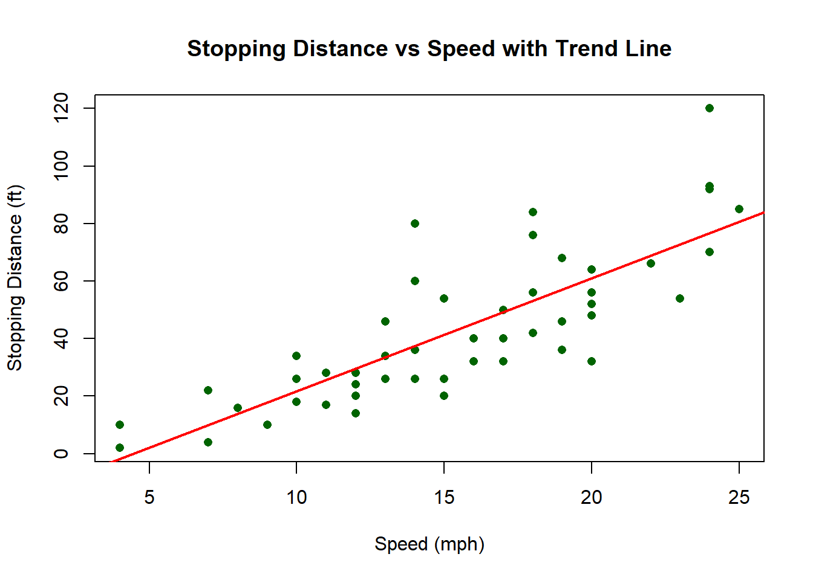
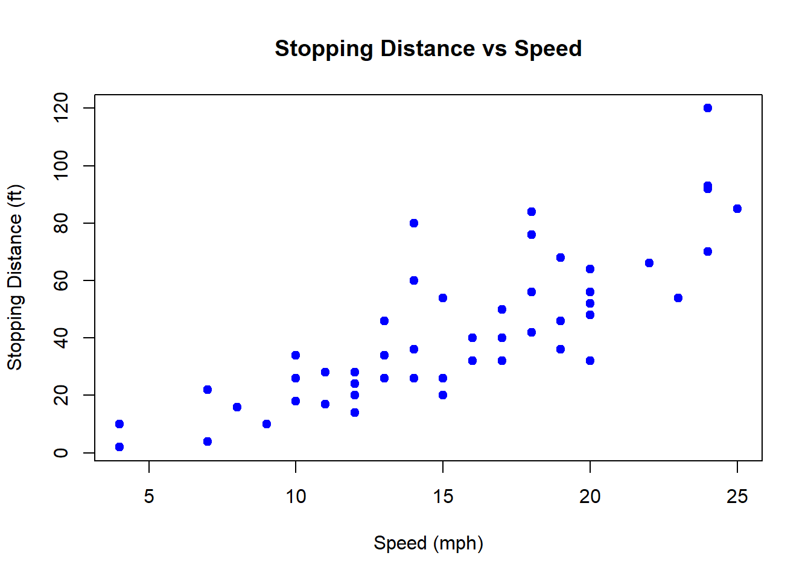

Appendix E Tutorial: Getting Started with RStudio
E.1 What is RStudio?
- R is a programming language for statistics, data analysis, and visualization.
- RStudio is an integrated development environment (IDE) that makes R easier to use with a friendly interface.
E.2 The RStudio Interface
When you open RStudio, you’ll usually see four main panes:
- Source Pane (Top-Left)
- Where you write and edit R scripts (.R), RMarkdown (.Rmd), or notebooks.
- You can run code line by line or in chunks.
- Where you write and edit R scripts (.R), RMarkdown (.Rmd), or notebooks.
- Console (Bottom-Left)
- Where R actually runs the code.
- You can type commands directly here for quick tests.
- Where R actually runs the code.
- Environment/History (Top-Right)
- Environment: Shows the objects (data, variables, functions) you’ve created.
- History: Keeps track of commands you’ve previously run.
- Environment: Shows the objects (data, variables, functions) you’ve created.
- Files/Plots/Packages/Help/Viewer (Bottom-Right)
- Files: Navigate your project folder.
- Plots: Displays graphs you generate.
- Packages: Manage installed R packages.
- Help: Documentation for R functions.
- Viewer: Preview HTML outputs (e.g., from RMarkdown).
- Files: Navigate your project folder.
E.3 Running Code
- Type directly into the Console and hit
Enter.
- Or, write code in the Source Pane and:
- Run a single line:
Ctrl + Enter(Windows) orCmd + Enter(Mac).
- Run a whole script:
Sourcebutton orCtrl + Shift + Enter.
- Run a single line:
E.4 Projects in RStudio
- Create a Project to keep related files together.
File → New Project → New Directory(or link to an existing folder).
- Projects make it easier to manage code, datasets, and outputs without breaking file paths.
E.5 Working with Packages
Packages are collections of R functions, data, and documentation bundled together to extend the capabilities of base R.
Think of them like “apps” you install on your phone — R comes with some built-in tools, but packages let you do much more specialized tasks.
Why use packages?
Packages provide extra functionality for tasks like data visualization, statistical modeling, spatial analysis, or machine learning.Where do they come from?
Most packages are shared on CRAN (the Comprehensive R Archive Network), but you can also install from GitHub or other repositories.How do you use them?
Install once per computer
Load every session (so R knows to use it)
Examples of popular packages:
ggplot2→ advanced graphics and plots
dplyr→ data wrangling and manipulation
tidyr→ reshaping datasets
readr→ reading CSV and text files
shiny→ building interactive web apps in R
✅ Key idea: Packages expand what R can do. Installing adds them to your computer, loading makes them available in your current session.
E.6 Writing and Saving Scripts
When you work in RStudio, you’ll often want to save your code so you can reuse it later, share it with others, or keep a record of what you did. This is where scripts come in.
E.6.1 R Scripts (.R files)
- An R script is a plain text file that contains R code.
- You can write multiple lines of code and run them whenever you want, instead of typing directly into the Console.
- To create one:
- Go to
File → New File → R Script(or useCtrl + Shift + N/Cmd + Shift + Non Mac).
- Go to
- To save:
- Use
File → Save As...and give your file a name ending in.R.
- Use
E.6.2 RMarkdown (.Rmd files)
An RMarkdown file combines code, text, and output in one document.
- Useful for reports, homework assignments, or reproducible research.
- To create one:
File → New File → RMarkdown
- You can include code chunks (inside triple backticks
{r}) along with explanations in plain English.
- Output can be HTML, PDF, or Word documents.
E.7 Plotting Example
R makes it easy to create plots and visualize data. Plots always appear in the Plots tab (bottom-right pane in RStudio).
E.7.1 Example 1: Simple Scatter Plot
You can create your own vectors and plot them.
# Create data
x <- 1:10
y <- x^2
# Scatter plot
plot(x, y,
main = "Simple Plot",
xlab = "x",
ylab = "y^2")
This will generate a basic scatter plot of numbers 1–10 against their squares.
E.7.2 Example 2: Using a Built-In Dataset (cars)
R comes with many built-in datasets. The cars dataset contains two columns:
speed→ speed of cars (in mph)
dist→ stopping distances (in feet)
We can quickly make a scatter plot to explore the relationship.
## speed dist
## 1 4 2
## 2 4 10
## 3 7 4
## 4 7 22
## 5 8 16
## 6 9 10# Create a scatter plot
plot(cars$speed, cars$dist,
main = "Stopping Distance vs Speed",
xlab = "Speed (mph)",
ylab = "Stopping Distance (ft)",
col = "blue",
pch = 19)
- col = “blue” makes the points blue.
- pch = 19 makes the points solid circles.
E.7.3 Example 3: Adding a Trend Line
You can add extra layers to your plots. For instance, let’s fit a simple linear model and add the regression line to the cars plot.
# Fit a linear model
model <- lm(dist ~ speed, data = cars)
# Plot again
plot(cars$speed, cars$dist,
main = "Stopping Distance vs Speed with Trend Line",
xlab = "Speed (mph)",
ylab = "Stopping Distance (ft)",
col = "darkgreen",
pch = 16)
# Add the fitted line
abline(model, col = "red", lwd = 2)
E.7.3.1 ggplot2 Version
The ggplot2 package provides more control and produces publication-quality graphics.
# Load ggplot2
library(ggplot2)
# Create scatter plot with regression line
ggplot(cars, aes(x = speed, y = dist)) +
geom_point(color = "darkgreen", size = 3) +
geom_smooth(method = "lm", color = "red", se = FALSE) +
labs(
title = "Stopping Distance vs Speed with Trend Line",
x = "Speed (mph)",
y = "Stopping Distance (ft)"
)## `geom_smooth()` using formula = 'y ~ x'
✅ Using base R, you get quick and simple plots.
✅ Using ggplot2, you get more flexible, customizable, and professional-looking plots.
E.8 Data Visualization Tutorial
The focus of today’s session will be developing your data visualization skills.
Visualizations are more than just decoration — they are essential tools for both communication and analysis. A clear, well-designed plot can reveal relationships, trends, and outliers that might be hidden in raw data, helping you generate insights and guide further exploration. At the same time, effective visualizations allow you to communicate those insights to others in a way that is intuitive and impactful, bridging the gap between data and understanding.
Work through this tutorial at your own pace:
Data visualization – R for Data Science